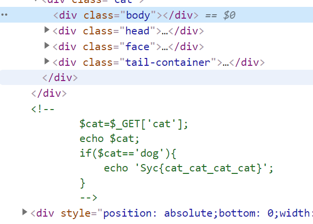
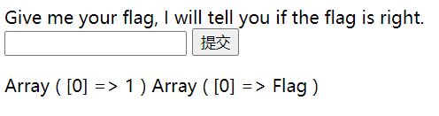
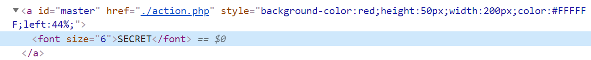

BUUCTF web记录
0x00 [HCTF 2018]WarmUp
引入眼帘的是个滑稽🤔
{kind=link}
F12看源码，发现页面注释里提示源码在source.php。
|
|
从source.php中还可以看到hint.php也包含一些信息。
|
|
查看hint.php，结果显示flag内容在ffffllllaaaagggg。直接访问该文件，发现无法访问（当然没这么简单了）
{kind=link}
再继续分析source.php，get的file参数要非空、为字符串且通过checkFile()函数判断，才能进入到include逻辑。
|
|
那就来看checkFile()函数，该函数返回true的地方一共有3处。
首先定义了一个白名单。请求的文件名在白名单中即返回true，对应于之前提到的source.php和hint.php。显然这个逻辑无法被用来读取flag。
|
|
第二个逻辑中，参数首先被根据?字符进行截取，截取后的内容如果在白名单中则返回true。这个也无法被用来读取flag。
相关函数：mb_strpos()、mb_substr()
|
|
再看最后一个返回true的逻辑。发现其先将get请求中的file参数进行一次URL解码，然后再去截取?前的内容，判断是否在白名单内。同时，php在读取$_REQUEST['file']参数的时候，就会进行一次URL解码。所以，我们只需要在地址中加入?经过两次URL编码之后的内容%253f即可通过函数验证，并且使得参数在经过一次URL解码之后不含?，也就不会被当作其他get请求的参数。
|
|
所以，可以构造payload。逐级添加../，找到ffffllllaaaagggg文件路径所在。
|
|

最后结论：我一开始看到warmup几个大字，还以为直接F12，然后flag分为几段放在源码里…🤣🤣，pico入门题真是害人不浅啊。
0x01 [极客大挑战 2019]EasySQL
简单的注入，用户名输入admin' or '1'='1' #，密码随便输即可。
{kind=link}
但是把#换成--就不行，暂时还不知道为什么。
登录之后拿到flag
{kind=link}
0x02 [强网杯 2019]随便注
网页提供了一个输入框，点击提交将会发出get请求，参数为inject=[输入的内容]。看源码，注释里提示“sqlmap是没有灵魂的”。
我的尝试：
提交admin' or '1'='1' #，结果页面上显示这些东西。
|
|
显然，这应该是查询语句所作用的表的所有记录，一共有3条。
为了找到flag，使用堆叠注入，输入1';show tables;#，查询所有表名。发现存在words和1919810931114514两个表。
{kind=link}
再使用desc查看两个表的结构，输入1';desc words，1';desc 1919810931114514;# 。这里有个小trick，使用纯数字表名 要在表名前后加上 ``(这里由于markdown无法转义的问题，所以没有加入到行内代码块中，实际输入要在数字前后加上)。可以看到flag内容位于1919810931114514表中。
{kind=link}
{kind=link}
接下来要想办法查询到该表中的flag内容。直接堆叠注入查询语句，会发现select等关键字都被过滤掉了。
{kind=link}
于是有两种思路
思路1
使用MySql的prepare功能，这是一个类似于计划任务的功能。将select查询语句转换为16进制，然后prepare…from…来执行该语句。
|
|
思路2
直接修改表的名字，rename/alter等关键字是没有被筛选的，所以可以被输入执行。先将words表名改为其他名字，再将1919810931114514表名改为words。因为当前页面的查询对象就是表words，所以可以直接进行查询。
|
|
0x03 [极客大挑战 2019]Havefun
界面还挺好看的
{kind=link}
源码中有这么一段注释

于是尝试get请求并且cat参数为dog，结果就出flag了…😓
{kind=link}
0x04 [SUCTF 2019]EasySQL
输入1';show tables;#，没反应，输入1;show tables;#，查询到有一个Flag表。

接下来肯定就是想办法获取Flag表中的内容了。
直接输入1;select * from Flag;，发现不让你查询，那肯定是过滤了select等关键字。
接下来就是学习别人的wp了😅。
据说这题比赛的时候给了源码，查询语句为
|
|
于是，可以输入*,1，使得被执行的查询语句为select *,1||flag from Flag，也就是select *,1 from flag。从而获取flag内容。
收获：注入的时候要先尝试带和不带'的输入，判断是数字型还是字符型注入。
0x05 [ACTF2020 新生赛]Include
这题和下一题都是挺有意思的题：）
首先进入题目给出的地址，看到一个超链接tips，点击之后看到提示file=flag.php。但是我们只能看到提示文字，并不能看到flag内容。
{kind=link}
这个时候就需要知道有个东西叫做php filter，利用php://filter伪协议，我们可以获取flag.php文件的全部内容。访问/?file=php://filter/convert.base64-encode/resource=flag.php。
{kind=link}
将内容进行base64解码，于是得到了藏在php文件注释中的flag。
{kind=link}
0x06 [极客大挑战 2019]Secret File
进入网页，啥也没有。检查源代码，发现了一个隐藏的链接。
{kind=link}
{kind=link}
访问/Archive_room.php，很明显能做的只有点击secret链接。
{kind=link}
查看secret对应的链接，为/action.php，但是点击之后的结果却是/end.php。

{kind=link}
于是，需要用到Burpsuite，拦截一下对action.php的访问。发现提示信息secr3t.php
{kind=link}
发现secr3t.php提供了文件包含服务，并且提示你flag在flag.php中。
{kind=link}
了解了上一题的套路之后，应该就能想到，直接获取/secr3t.php?file=flag.php，应该是不会直接给你flag的😁。
{kind=link}
于是，又是和上一题一样的套路，使用filter，获取flag.php内容，然后再解码。
{kind=link}
0x07 [极客大挑战 2019]LoveSQL
还是不太会…
参考wp：
- https://blog.csdn.net/SopRomeo/article/details/103979047
- https://blog.csdn.net/xixihahawuwu/article/details/109999044?utm_medium=distribute.pc_relevant_t0.none-task-blog-BlogCommendFromMachineLearnPai2-1.control&dist_request_id=af7328be-e424-4bcb-a3e6-e102be9d0ff9&depth_1-utm_source=distribute.pc_relevant_t0.none-task-blog-BlogCommendFromMachineLearnPai2-1.control
只能记录一下自己接触了啥新概念吧
- 测试注入类型
- 使用
1' order by x#，测试不同x的值，根据什么时候报错来确定表的列数 - union联合查询